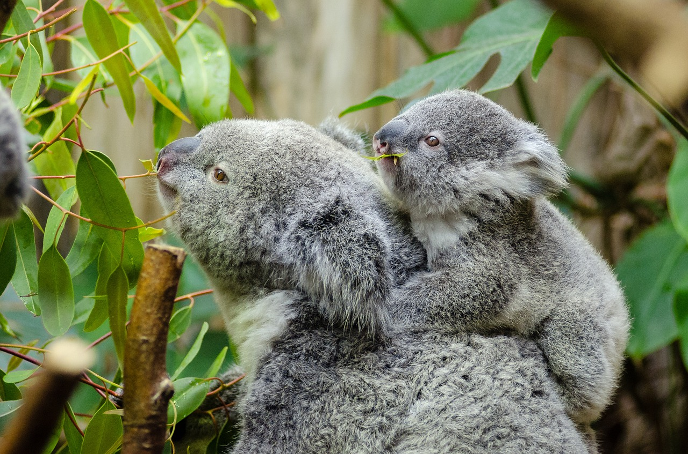

What is a Koala Bear?
Though often called the koala “bear”, this cuddly animal is not a bear at all;
it is a marsupial, or pouched mammal. After giving birth, a female koala carries
her baby in her pouch for about six months. When the infant emerges, it rides on
its mother's back or clings to her belly, accompanying her everywhere until it
is about a year old.
What is their Habitat?
Koalas live in eastern Australia, where the eucalyptus trees they love are most plentiful.
In fact, they rarely leave these trees, and their sharp claws and opposable digits easily
keep them aloft. During the day they doze, tucked into forks or nooks in the trees,
sleeping for up to 18 hours.
What do Koalas Eat?
When not asleep a koala feeds on eucalyptus leaves, especially at
night. Koalas do not drink much water and they get most of their moisture from these leaves.
Each animal eats a tremendous amount for its size-about two and a half pounds (one kilogram) of
leaves a day. Koalas even store snacks of leaves in pouches in their cheeks. A special digestive
system-a long gut-allows koalas to break down the tough eucalyptus leaves and remain unharmed
by their poison. Koalas eat so many of these leaves that they take on a distinctive odor from
their oil, reminiscent of cough drops.
Are they Endangered?
These plump, fuzzy mammals were widely hunted during the 1920s and 1930s, and their populations
plunged. Helped by reintroduction, they have reappeared over much of their former range, but
their populations are smaller and scattered. Koalas need a lot of space. About a hundred trees
per animal is the pressing problem as Australia's woodlands continue to shrink.

Koalas Click the link below to view a fact sheet about Koala bears.